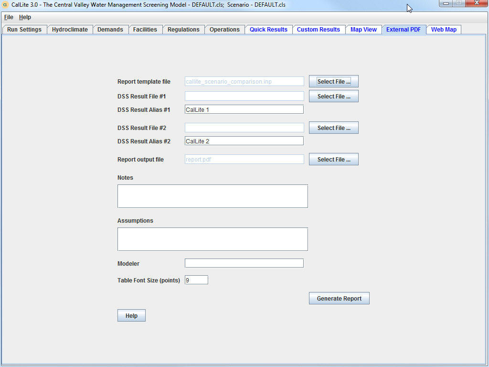

This dashboard allows the user to produce a standardized comparison or corroboration report that compares the results of two CalLite scenarios or corroborate between CalLite and CalSim. The dashboard produces this report by calling one of the CalLite utilities, the CalLite report tool. The report shows storage in major reservoirs, flows at key river segments, CVP and SWP deliveries, and other scenario outputs. In order to generate the report, use the Select File buttons to select a report template file (.inp file), two DSS output files, and a report output file name; enter names for each of the two studies to be compared (defaults are set to CalLite 1 and CalLite 2); and hit the Generate Report button. Optional information such as notes, assumptions, and modeler name can also be added to the report.
The default report template file (callite_scenario_comparison.inp) will compare two CalLite scenarios. The report tool can also be used to compare CalLite results to the results of a CalSim run. To do this, DSS Result File #1 must be set to the output DSS from the Calsim run, DSS Result File #2 must be set to the output DSS from the CalLite run; and the report template file must be set to calsim_callite_corroboration.inp. For more detailed description of the report tool, and instructions on how to edit the report template files, see Appendix J in the CalLite Reference Manual.
